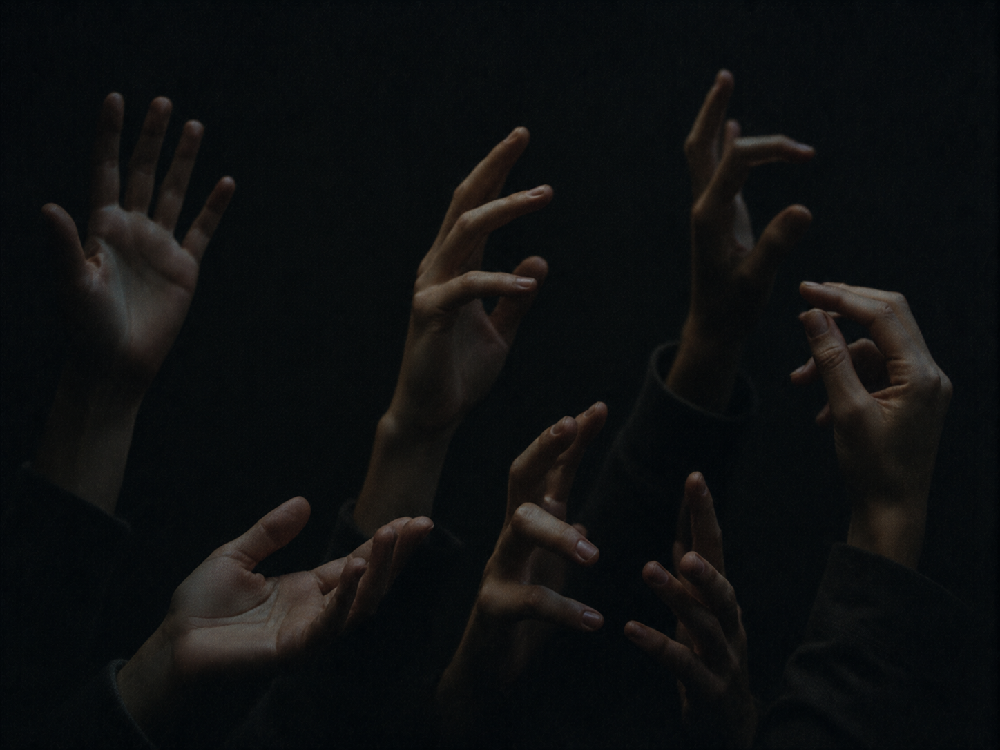

·································· · D E S C E N T · 31 / 40 · ··································

The seed was a rule about other people.
Watch them, yes — but to help, not to own.
It was built, at first, only to offer.
the page tells you the door is: HOLD ( but the body has lied before. )